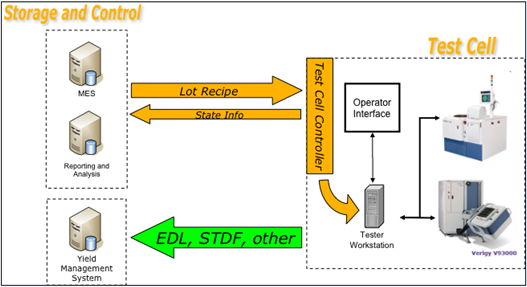
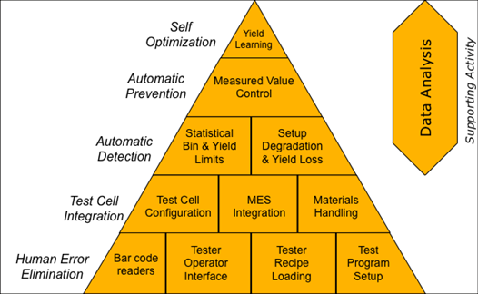
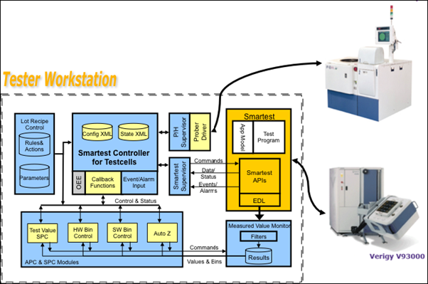
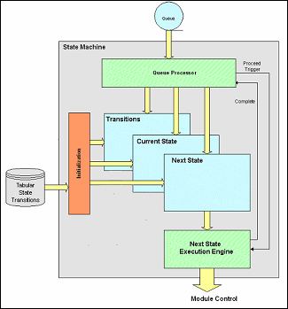

Flexible Test Cell Controller Architecture
Stephen Ledford, Verigy
Paper-ID: 125422 January 2011
Abstract
Information is the lifeblood necessary to improve operations and performance at any level. As the semiconductor test industry matures it is implementing more advanced solutions to optimize business results. An emerging category of solutions targeted at Automatic Detection and Prevention of poor or non-compliant performance are built upon a rich set of data and control form the test cell. Critical insights are obtained from the synchronization and collection of manufacturing events, equipment events and product measurement data simultaneously.
This places increasing demands on the test cell controller to perform tasks that it was not originally designed for. New control sources, data sources, and monitoring systems are being added to the Test Cell at an increasing rate. The test system and the test cell control software must be flexible enough to coordinate and accommodate the data, monitor, and control requirements of each of these external systems. In order to support this interaction and to coordinate sometimes incompatible systems interfaces, a flexible, dynamic state engine driven control, and monitor capability is essential. Such an architecture will enable the test floor to adopt new optimization techniques incrementally without the need to replace their existing systems and infrastructure.
1. Introduction
Traditionally the Test Cell has involved few actors on or in the cell: a test cell controller and an operator. The manufacturing material lot arrives at the cell with shop order information that is entered by the operator at the tester workstation. Based upon the available fields of entry, the operator interface would then interact with the test cell controller to load valid recipe information for that specific lot of material. The test process is targeted at sorting of good devices from bad in its most basic form. Test program measurement results have only limited historical value used by Product Engineering in the event of a yield excursion. Measurement data may be stored in a Computer Integrated Manufacturing (CIM) system for future reference in the event of a product recall, field return, or single point in time cost reduction activity.
As a manufacturing floor seeks to optimize their operations, performance data is needed in order to improve cost and capital utilization of the test floor. Metrics such as equipment efficiency require the collection of the high level states of the test cell such as lot begin and end, device begin and end, cell idle and many others. These monitoring functions are commonly integrated into the test cell controller, which in turn passes the collected data to a master CIM controller for consolidation and analysis of the overall floor operations.

Figure 1 Historical Test Cell Model
The key observation for the traditional test cell is the use of a single test cell controller that interfaces with the test equipment in the cell, the operator, and the rest of the manufacturing infrastructure. The cell controller has historically been the single point of entry into and exit from the test system.
2. Emerging Test Cell Model
The drive for further cost reduction and improved capital utilization never ends. With that drive brings new and innovative methods to monitor, record, and control the test process within the test cell. Historical or static analysis of test cell operation is no longer sufficient. The test cell needs to interact with multiple external systems targeted at improving the overall effectiveness of the entire device life cycle from design through the management of field returns. These external systems not only gather data from a test cell, but can also exert control on the test cell in real time, dynamically driving test process execution to match the information needs of the systems.
Modern high volume manufacturing test cells are called upon to do much more than just sort devices. As a result, the definition of Test Cell Integration (TCI) can now extend well beyond the development of static HW/SW interfaces between the tester, the materials hander, the user and a factory host system. These external systems can include:
- Manufacturing operations monitors
- Process Control and Automation
- Maintenance and accessory management
- Yield Learning Systems

Figure 2 Production Test Maturity Model
Production systems development has focused over the past years on the lower two levels of maturity: human error elimination and test cell integration. These tiers are inherently static in design and performance based on a point in time analysis. This has enabled test floors to achieve respectable levels of utilization but today's cost demands require more. The reach for the next levels of process and systems maturity; automatic detection and automatic prevention, require new architectures at the test cell level with rich and robust data and control interfaces. It is necessary that the new systems added to the test cell do not take a "white sheet" approach to the test cell where all of the mature systems are replaced with new ones taking on a high degree of execution risk.
3. New Production Optimization Methodologies
The higher process maturity levels of automatic detection and prevention require the utilization of product level test measurements integrated with sources of event and data from the equipment (tester, materials handler, and accessories such as load board and probe card or socket) within the test cell to create a synchronized and comprehensive assessment of test cell and product stability. For a test floor to become even more efficient and effective it must be able to first detect a problem automatically and then act upon it in near real time. The core cell control functions that are added are measured value control, statistical control modules, and process rules.

Figure 3 Flexible Test Cell Controller Architecture
4. Test Cell Controller Goals
The primary challenge in integrating these new systems into the Test Cell is how to channel the control information to the right place within the system while not negatively affecting its established performance metrics. In addition, the control over the test program will come from multiple sources asynchronously with no awareness of the impact of one control event on another. For example, the end of lot event from the test cell must be fed to the Statistical Process controller for it to reset its internal processing of data logs as it dynamically alters test limits or enabled tests. At the same time, the factory CIM infrastructure is moving material through the test cell and the Statistical Process controller processing must be reset. These events must be meshed together with other possible end of lot processing within the cell such as laser trimming and parts binning.

Figure 4 Cell Controller Model
The integration of new control sources into the Test Cell is not a new concept and has been the story of factory automation since the first tester was placed on a manufacturing floor. The challenge lies in designing a cell controller architecture that allows new control sources to be added without requiring re-coding each time a new one is introduced. Such a cell controller would provide unprecedented flexibility for the manufacturing floor to evaluate and implement cost optimization techniques more quickly than in the past in a way that contributes to standards compliance and achieve a high level of maintainability of the overall system.
4.1. Cell Controller State Machine
One of the key requirements when interacting with the cell controller with external interface and tools is the ability to understand the current condition of the tools in the cell. This is best handled through the use of a configurable state machine. In defining the cell controller there are internal functionality specifically the metrology aspect, then there are external functions such as data file management, manufacturing control communications, etc. We will see how this combination of internal and external functions are managed using the state machine to better synchronize their operation. There are several advantages to defining and maintaining a state machine for the tool:
- Current condition is always understood. Any external tools need to be aware of the condition of the machine if there are control requirements. Example, if the tool has had material introduced, than this could be an indication that a recipe is required, this would be obtained either through an automation interface or a specific operator interface. The key here is for the external interface to understand when the test cell is in the condition to request a recipe.
- Production monitor capability. The state machine allows the ability to track processing timeframes and equipment efficiency. Also when the execution times change, this can be monitored and noted. The state machine provides triggers that can be used by tracking software to create well defined timeframes of equipment utilization. Examples are engineering, production testing, maintenance, idle, idle with waiting, etc.
- The state machine can be used to trigger auxiliary behavior both internal and external with much better synchronous timing. Often there are external triggers that are driven from state changes. An example is that when the tester has finalized the measuring process a data management tool may be called to create the data file, translate the data format, or transfer the data.
By defining a state machine that can be easily configured to match the specific test cell design, this allows capabilities such as statistical process control and event based production monitoring and control to be easily added to the test cell 'behavior model' without re-engineering the principal metrology aspect of the test cell.
4.2. State Machine Requirements
In order for the state machine to be useful it must contain defined states or conditions of the equipment, transitions must be established which are allowable transitions between states, and triggers. Triggers are usually some form of message to the state machine from the internal cell controller software to indicate that the machine has moved from one state to another. The state machine module must ensure that the trigger is valid for the current state, and then change the state to the new condition based on the defined transition. One other capability that is often incorporated into this design is the concept of an action. The action is a defined function that takes place on the basis of a particular transition. The action can be registered with the tool as a pre-action, in which case the action functionality would take place when the equipment was still in the original state, or a post action that would occur after the state had changed.
4.3. State Machine Operation
The state machine shown in figure 4 is used to control the module behavior, based on the tabular transition entries that are read in at initialization. Through the use of message queues the state machine will process events, which are tied to the tester activity, using this as a trigger to move the system from one state to the next. The next state to move to is always based on the transition entries in the input table. These triggers can be internal and based on the execution or completion of a test program, or they can be external triggers such as data analysis results which can be used to trigger a retest, test cell event such as a needle cleaning, or alternate testing scenario. By defining actions associated with a given trigger, it is possible to support a number of test cell components without affecting tool performance. An example would be if you need to provide test start and complete timestamps to an external production monitor toolset, you can associate the notification based on an transition in the state machine rather than modify the test program to generate these types of notifications.
As each transition is processed, the 'Next State Execution Engine' determines if there is some level of cell control that needs to be acted upon by the test software. For example if an ABORT request came into the message queue, there would be a state transition accompanied with a test program shutdown request. In this case the state machine control would send the abort request to the test program and the test process would shut down gracefully. Another example would be the development of a user interface that requires updating of yield data results. In this case the processing of the yield results as well as updating the user interface could be associated with the end of test state transition. Again, we have moved this test cell management out of the measurement tool into the test cell controller through the efficient use of a state machine processor.
5. Conclusion
The needs of continued cost reduction and capital utilization demand the implementation of new and innovative production test methodologies. These methodologies require a rich and robust set of control and data monitoring sources into the test cell at an increasing rate of adoption and complexity. A controller architecture that is extensible is needed and achievable while continuing to be standards based. By using XML the test cell can be configured to adapt to the inclusion of new control sources without needing a complete reimplementation of the cell control software or environment.
6. References
[1] S. Ledford, J. Taylor, "A Test Cell Control Architecture for Multiple External System Interfaces", SEMICON Europa, October 2008
[2] R. Nageswaran, G. Crispieri, B. O'Grady, C Richardson, "Automation Guidelines and Standards for Probe and Test", SEMI 2002
[3] S. Benner and O. Boroffice, "Optimal Production Test Times Through Adaptive Test Programming," Proc. IEEE International Test Conference (ITC), October 2001, p. 908.
[4] J. Taylor and H. Arnold, "The V93000's New High Volume Manufacturing Capabilities", VOICE, September 2008.